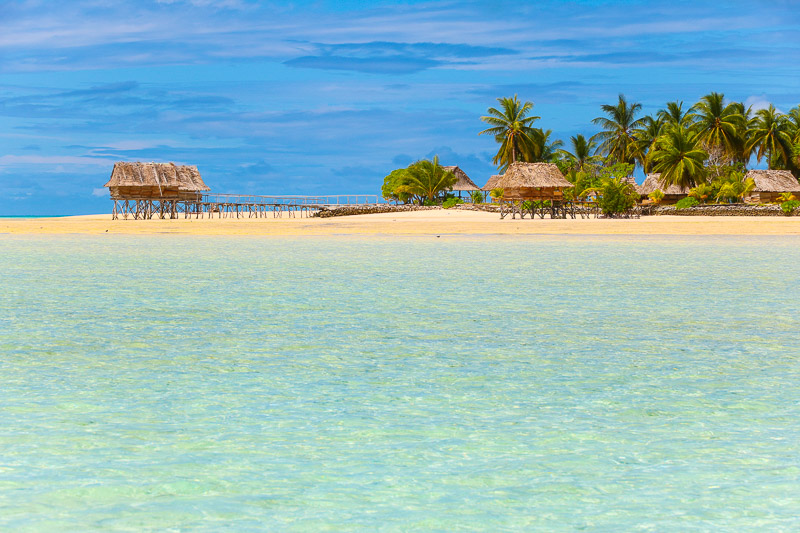

North Tarawa is one of the island in Kiribati that known as Tarawa I eta. Tarawa I eta is closed to the the main island where most tourist visit often. I choose this place because of tourism. There are lots of guest house that where built on this island because of a good enviroments and peacfulness. On this island, you can easily find traditional food and traditional occasions. When you are on this island, you can catch a beautiful sunrise, sunset from it.
